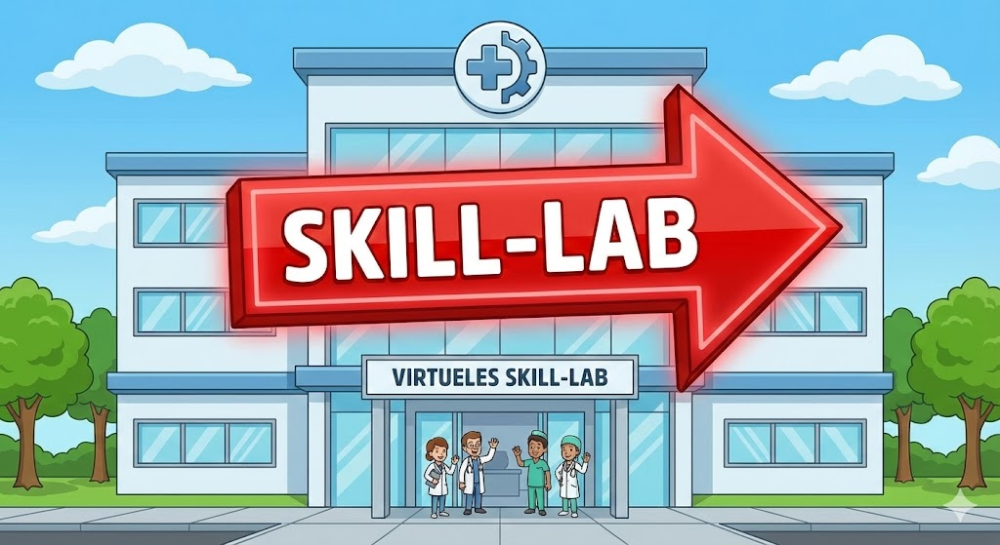
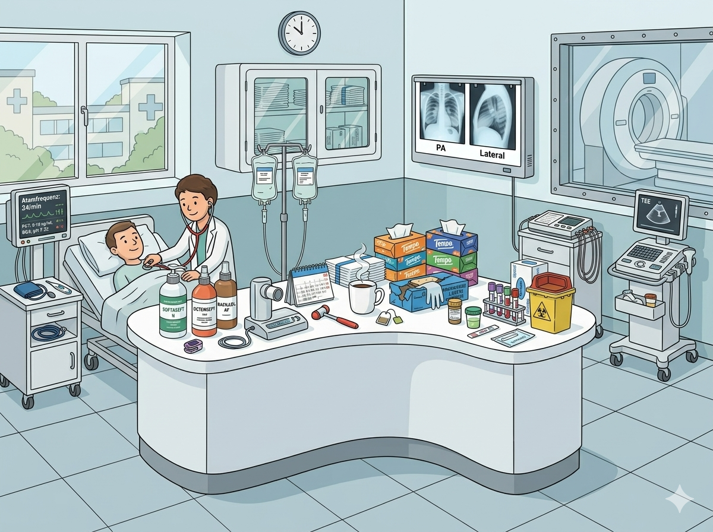

Charité Berlin · Ausbildungsstation
Welche Instrumente brauchst du für die Diagnose?

Team: —
| # | Instrument | Kategorie | Deine Antwort | Ergebnis |
|---|
Aufnahme eines Patienten mit Verdacht auf CAP (Community-acquired Pneumonia)
nach S3-Leitlinie CAP (AWMF 020-020) · Ewig, S. (2016). Ambulant erworbene Pneumonie. Springer.
Angaben gemäß § 5 TMG:
Claus Clemens
Kirchhofstr. 1
13585 Berlin
Kontakt:
E-Mail: claus.clemens@charite.de
Verantwortlich für den Inhalt nach § 18 Abs. 2 MStV:
Claus Clemens
Kirchhofstr. 1
13585 Berlin
Idee, Konzept und Umsetzung:
Claus Clemens
Technische Unterstützung & KI-Tools:
Dieses Projekt wurde unter Zuhilfenahme von Künstlicher Intelligenz erstellt,
um das Lernerlebnis zu optimieren:
Urheberrechtshinweis:
Alle Konzepte, die didaktische Struktur des Pneumonie-SkillLabs sowie die
spezifischen medizinischen Inhalte wurden von Claus Clemens konzipiert und
implementiert.
„Dieses Spiel dient ausschließlich zu Schulungszwecken und ersetzt keine medizinische Ausbildung oder professionelle Leitlinien. Für die Richtigkeit der Darstellungen im realen klinischen Alltag wird keine Haftung übernommen."